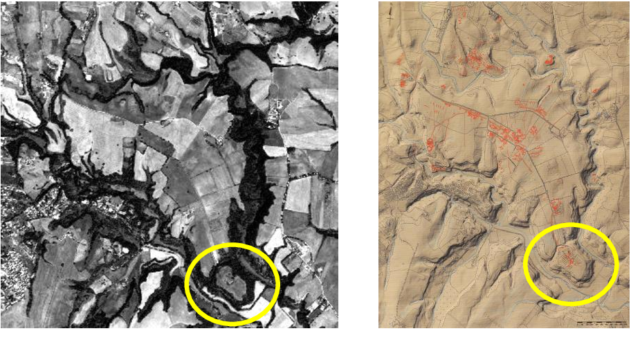
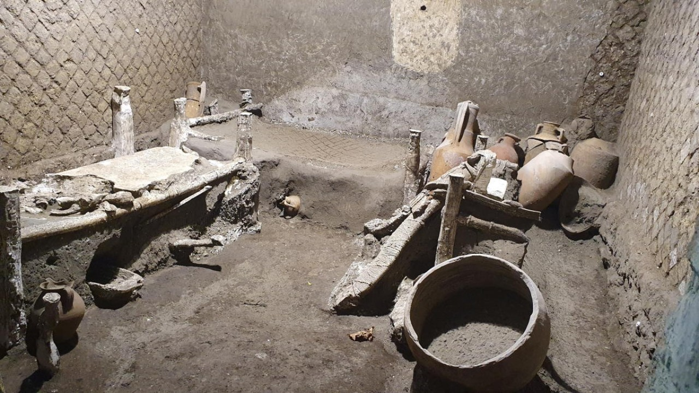

Mos Eisley was once a rich port city, but with the disappearance of water from the planet eons ago, this city was covered in the Tatooine's desert sands and baked by the UV rays of its twin Suns.
In cooperation with Tatooine's Ministry of Archaology, we applied remote sensing technology to uncover the hidden stories of Mos Eisley's past.
Archaeological work uncovered former dwelling quarters for plebians.
These advances lead to new understanding of how the city and it's creatures cohabitated.
